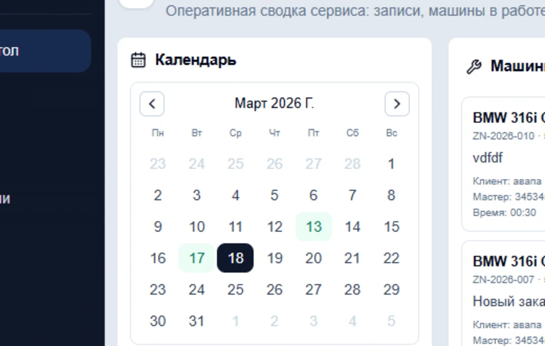
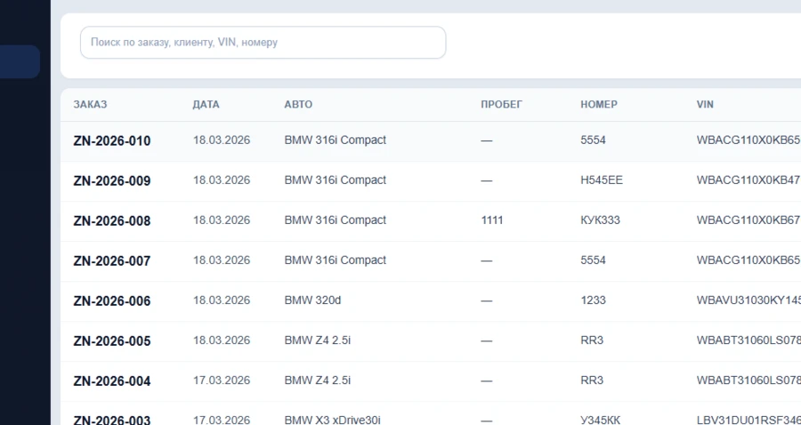
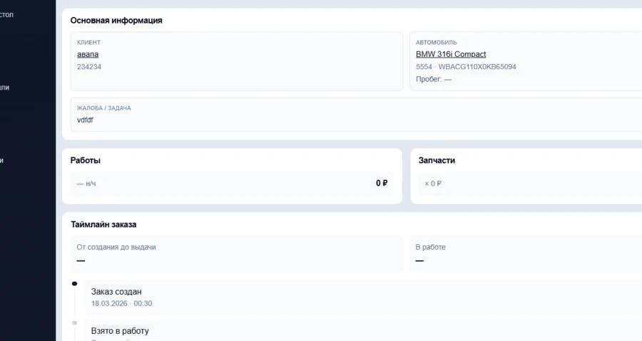
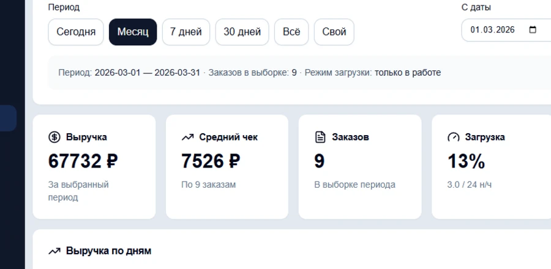

Desktop ERP для автосервиса
Автосервис под контролем в одной системе
Veyronix помогает вести клиентов, автомобили, заказы, мастеров, календарь записи и отчёты в одной рабочей среде без хаоса, лишних переключений и потери информации.
- Клиенты, автомобили и заказы связаны между собой
- Быстрая работа администратора и понятная картина для руководителя
- Операционная система сервиса, а не набор разрозненных таблиц
Дальше: процессы, возможности и рабочая логика сервиса
Операционный обзор
Онлайн-контроль
Связанный контур
Клиент
Автомобиль
Заказ
Мастер
Календарь
Отчёты
О продукте
Не просто учёт, а рабочая система сервиса
Veyronix создан для повседневной операционной работы автосервиса. Здесь не нужно держать клиентов в одной таблице, запись в другой, а историю заказов вспоминать по перепискам и заметкам. Вся ключевая работа собирается в одной системе: от первого звонка и записи до закрытия заказа и анализа загрузки сервиса.
Клиенты
Автомобили
Заказы
Мастера
Календарь
Отчёты
Преимущества
Что получает сервис
Один контур работы
Клиенты, автомобили, заказы, мастера, календарь и отчёты живут в одной системе и не распадаются на разрозненные инструменты.
Быстрее ежедневные действия
Из заказа можно перейти к машине, клиенту, мастеру и связанным действиям за несколько кликов, без ручного поиска по базе.
Прозрачность для руководителя
Загрузка мастеров, заказы, требующие внимания, частые автомобили, топ клиентов и экономика сервиса показывают реальную картину.
Процесс
От записи до закрытия заказа
Система поддерживает полный рабочий маршрут сервиса без разрыва между этапами.
Рабочий маршрут сервиса
Запись, оформление, история и контроль результата в одном потоке.
Запись клиента
Администратор выбирает клиента, автомобиль и время, сразу видя связанный контекст и историю.
Оформление заказа
В заказе фиксируются статус, мастер, работы, запчасти, рекомендации и дополнительные детали.
Ведение истории
По машине и заказу сохраняется история изменений, посещений и связанных действий.
Контроль загрузки и результатов
Руководитель видит, что происходит сейчас, где перегрузка и на каких клиентах и автомобилях строится активность сервиса.

Календарь и события дня помогают быстро перевести запись в рабочий заказ.

Список заказов держит статусы, автомобили и клиентов в одном рабочем контуре.

В карточке заказа собираются клиент, автомобиль, работы, детали и история действий.

Отчёты и контрольные показатели показывают итоговую картину по заказам и загрузке.
Возможности
Ключевые возможности
Единый контур данных
Одна система вместо набора таблиц, звонков и разрозненных заметок
Клиенты
База клиентов, быстрый поиск и связка со всеми автомобилями и заказами.
Автомобили
История машины, визиты, связи с клиентом и переходы к связанным заказам.
Заказы
Карточка заказа с работами, запчастями, рекомендациями, историей и статусами.
Мастера
Учёт мастеров, контроль загрузки и быстрый переход от аналитики к действию.
Календарь записи
Планирование загрузки и привязка клиента и автомобиля к записи в одном экране.
Отчёты
Показатели сервиса с прямыми переходами к заказам, клиентам, машинам и мастерам.
Удобство работы
Почему с этим удобно работать каждый день
Система строится вокруг реальной работы администратора и руководителя сервиса. В ней важны не только сущности сами по себе, но и быстрые связи между ними.
Меньше лишних действий
Больше контекста
Быстрее решение по заказу
Быстрые переходы между связанными сущностями
Меньше ручного поиска и повторного ввода
Понятная карточка заказа как центр действий
Наглядная загрузка мастеров и история по автомобилю
Отчёты как инструмент навигации, а не пассивная таблица
Для кого
Кому подходит Veyronix
Один продукт
Для владельца, администратора и руководителя в одном рабочем контуре
Владельцу сервиса
Чтобы видеть загрузку, ключевые показатели и текущую операционную картину без ручного сбора данных.
Администратору
Чтобы быстро вести запись, клиентов, автомобили и заказы в одной системе без постоянных переключений.
Руководителю
Чтобы контролировать сервис, не погружаясь в лишние административные детали и сохраняя обзор ключевых разделов.
Клиенты
Автомобили
Заказы
Мастера
Отчёты
Финальный CTA
Соберите операционную работу автосервиса в одной системе
Veyronix помогает держать под контролем клиентов, автомобили, заказы, мастеров, загрузку сервиса и рабочую аналитику в одном понятном контуре.
Desktop ERP
Связанные сущности
Живой операционный контур
Следующий шаг
Покажем, как Veyronix может выглядеть в работе именно вашего сервиса
Демонстрация, структура внедрения и рабочие сценарии без лишней теории.